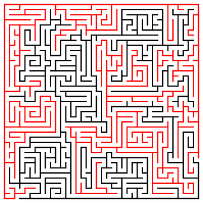

〜2015年3月下旬〜
見逃すといっても朝来たメールを夜読んだというぐらいなんだけど、すでに買われていた。
最近メールはひどい時は1週間ぐらい読まないときもあるので、
別の手段で通知させることにした。
iftttを使うとgmailの検索機能+pocketに保存ってことができるので、
subjectを拾ってpocketで見ることにしてみた。
次はちゃんと気づけるか。
シェルスクリプトの中で&つけて実行してwaitで待つってのはよくやると思うが、
CTRL+Cで殺すとそいつらが残ってしまいkillしまくるというのもよくある。
そこでぐぐると、Stack Overflowでこんな記事が見つかった。
kill background process when shell script exit
いろいろ方法はあるようだけど、下手すると無限ループになってしまうらしい。
というわけで、
trap 'trap - SIGTERM && kill 0' SIGINT SIGTERM EXIT
を使ってる。trap - SIGTERMがその回避でハンドラーをリセットしないと、
kill 0でまた自分自身を呼ぶことになってしまう。それが無限ループの原因。
imapfilterとThunderbirdのフィルターで同じようなことをすると、
ひょっとしたらダブるような気がして重複したメッセージを削除する拡張を入れてみた。
Remove Duplicate Messages (Alternate)
結局ダブることはなかったのでよかったが、
というか他の要因でダブっていることがわかった。
そういえば以前なんかあったような？
hoge > >(foo)とかやるとhoge | fooと同じようなことができるが、foo自体の終了は待たない。
あまり問題にはならないけど、待ちたいときもある。
zshだと
% { hoge; } > >(foo)
で待つようになるらしい。MULTIOSの機能だとか。
% date > >(sleep 1; cat)
% Tue Mar 24 23:13:28 JST 2015
% { date; } > >(sleep 1; cat)
Tue Mar 24 23:13:34 JST 2015
%
終了を待たないのでプロンプトが先に表示されていたが、
ちゃんと待つようになっている。
ひとつとびにならべてみるとわかります。
% echo パタトクカシーー | grep -o .. パタ トク カシ ーー % echo パタトクカシーー | grep -o .. | grep -o '^.' パ ト カ ー % echo パタトクカシーー | grep -o .. | grep -o '^.' | paste -sd "" パトカー
で、もう1個のほうは
% echo パタトクカシーー | grep -o .. | grep -o '.$' | paste -sd "" タクシー
まあ、sedのほうが簡単。
% echo パタトクカシーー | sed 's/\(.\)./\1/g' パトカー % echo パタトクカシーー | sed 's/.\(.\)/\1/g' タクシー
cf: 言語処理100本ノック 2015
昨日の逆。やはりgrepとpasteで。
% echo パトカー|grep -o . パ ト カ ー % echo タクシー|grep -o . タ ク シ ー % paste -d "" <(echo パトカー|grep -o .) <(echo タクシー|grep -o .) パタ トク カシ ーー % paste -d "" <(echo パトカー|grep -o .) <(echo タクシー|grep -o .) | paste -sd "" パタトクカシーー
3つでも可能。
% paste -d "" <(echo りんご|grep -o .) <(echo みかん|grep -o .) <(echo ばなな|grep -o .) | paste -sd "" りみばんかなごんな
記号がいやらしい。
% echo Now I need a drink, alcoholic of course, after the heavy lectures involving quantum mechanics. |
awk '{printf length}' RS='[,. \n]+';echo
314159265358979
% echo Now I need a drink, alcoholic of course, after the heavy lectures involving quantum mechanics. |
xargs -n1 sh -c 'echo -n $1 | tr -d ,. | wc -c' - | paste -sd ''
314159265358979
先の例は
xargs -n1 -I{} sh -c 'echo -n {} | tr -d ,. | wc -c' | paste -sd ''
でいいような気がするんだが、{}はNow I ... mechanicsのように全部展開されてしまう。
% echo Now I need a drink, alcoholic of course, after the heavy lectures involving quantum mechanics. |
xargs -n1 -I{} echo {}
Now I need a drink, alcoholic of course, after the heavy lectures involving quantum mechanics.
-d ' 'とすれば一応分割される。しかし今度は改行がそのまま{}に入ってしまう。
% echo Now I need a drink, alcoholic of course, after the heavy lectures involving quantum mechanics. |
xargs -n1 -d ' ' -I{} echo {}
Now
I
need
a
drink,
alcoholic
of
course,
after
the
heavy
lectures
involving
quantum
mechanics.
いずれにしても難しい。というか素直にfor i in ...でいいんだが。
% sh -c 'IFS=" ,."; for i in Now I need a drink, alcoholic of course, after the heavy lectures involving quantum mechanics.; do echo -n $i | wc -c; done' | paste -sd '' 314159265358979
sedだと行番号を指定できるので比較的簡単。
% echo "Hi He Lied Because Boron Could Not Oxidize Fluorine. New Nations Might Also Sign Peace Security Clause. Arthur King Can." | xargs -n1 | sed '2,4b;10,14b;17,18b;s/^\(.\).*/\1/;:;s/^\(..\).*/\1/' H He Li Be B C N O F Ne Na Mi Al Si P S Cl Ar K C
確かにマグネシウムMgがMiになってるのはだめなんじゃないかな。
% echo "Hi He Lied Because Boron Could Not Oxidize Fluorine. New Nations Might Also Sign Peace Security Clause. Arthur King Can." | xargs -n1 | sed '2,4b;12s/\(.\)./\1/;10,14b;17,18b;s/^\(.\).*/\1/;:;s/^\(..\).*/\1/' H He Li Be B C N O F Ne Na Mg Al Si P S Cl Ar K C
ちょっとアドホックすぎるが。
ちょっと題意とは外れるかもしれないけど、GNU Parallelはどうでしょう？
% parallel echo {1} {2} {3} {4} ::: "" a ::: "" b ::: "" c ::: "" d
d
c
c d
b
b d
b c d
b c
a
a d
a c
a c d
a b
a b d
a b c
a b c d
面白い記事を見つけた。
hirax.net::「迷路」を画像処理ソフトで解いてみよう!…の理屈とは!?
なるほど。塗り潰せばいいわけだ。だったらconvertでも可能なのでやってみた。
迷路画像は適当にfreeな画像をぐぐって検索。
http://www.jigsaw-puzzles-free.com/Mazes/Printable/Images/Maze%2077.gif
displayで中クリックしてどこか1点黒いところを見つけて(13,13)、その領域を赤く塗り潰す。
% convert Maze\ 77.gif -resize 50% maze.png % convert Maze\ 77.gif -fill red -draw "color 13,13 floodfill" -resize 50% maze-sol.png
でこれが結果。

確かにこれなら簡単に解ける。
n-gramとか面倒なので、一気に08へ飛ぶ。
英小文字ならば(219 - 文字コード)の文字に置換というのはどういうことかというと、
実はreverseにすぎない。
% ruby -e 'puts [*"a".."z"].join.bytes.map{|x|219-x}.pack("C*")'
zyxwvutsrqponmlkjihgfedcba
trが簡単かな。元の文は03の円周率をそのまま使おう。
% echo Now I need a drink, alcoholic of course, after the heavy lectures involving quantum mechanics. Now I need a drink, alcoholic of course, after the heavy lectures involving quantum mechanics. % echo Now I need a drink, alcoholic of course, after the heavy lectures involving quantum mechanics. | tr a-z zyxwvutsrqponmlkjihgfedcba Nld I mvvw z wirmp, zoxlslorx lu xlfihv, zugvi gsv svzeb ovxgfivh rmeloermt jfzmgfn nvxszmrxh.
復号も簡単で、もう一度通せばいい。
% echo Nld I mvvw z wirmp, zoxlslorx lu xlfihv, zugvi gsv svzeb ovxgfivh rmeloermt jfzmgfn nvxszmrxh. | tr a-z zyxwvutsrqponmlkjihgfedcba Now I need a drink, alcoholic of course, after the heavy lectures involving quantum mechanics.